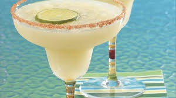

Magarita
home

Description
ingredient
- 1 cup ice
- 2 oz tequila
- 1 oz triple sec
- 1 oz lime juice
- ½ tsp tajín or chili powder (for rim)
Steps
- Rim glass with lime + tajín.
- Blend ice, tequila, triple sec, lime juice, and fruit (if using) until slushy
- Pour into the glass and add a spicy straw.